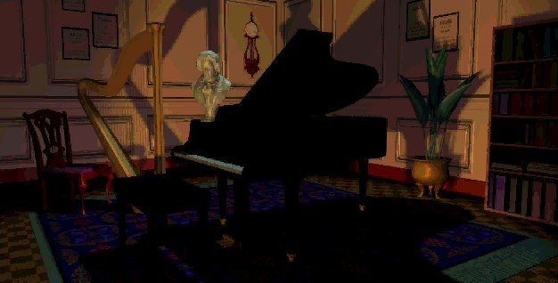
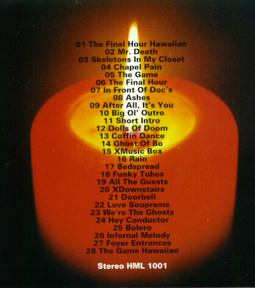

"I heard singing upstairs, like some mad choire."
One of the great assets in the game was the music, it made the scary bits scarier and the atmosphere er...atmospherer. Someone else at Computer Gaming World said it better in a review of the game. "If I were to single out the strongest and most distinctive contribution to the unparalelled atmosphere created in [the game], it would be the music employed. Turn off the lights, turn up the volume and prepare for the inevitable chill to run down your spine." The man behind all this is George Alistair Sanger also known as The Fat Man.
This man from Texas has been busy in the gamesindustry for quite a while. He composed music for lots of games. Check this list (from '98) out below.
| Product Name | Software Developer |
|---|---|
| Dawn of War | Illusion Machines |
| Qwxyz | JW Associates |
| Tanarus | Sony Interactive Studios |
| WarSport | TimeSink |
| The 7th Guest part 2--The 11th Hour | Trilobyte |
| Wing Commander | Origin Systems |
| The 7th Guest | Trilobyte |
| Putt Putt Goes to the Moon | Humongous |
| Wing Commander II | Origin |
| Putt Putt Saves the Zoo | Humongous |
| US Navy Fighters | EA |
| Advanced Tactical Fighters | EA |
| Master of Orion | SimTex |
| Zhadnost: The Peoples' Party | 3DO |
| Shannara | FAR Productions |
| Master of Magic | SimTex |
| Zombies Ate My Neighbors | Lucasfilm Games |
| Ultima Underworld | Blue Sky |
| NASCAR Racing | Papyrus |
| SEAL Team | EA |
| Loom | Lucasfilm Games |
| Freddi Fish | Humongous |
| Star Trek-25th Anniversary | Interplay |
| Son of MULE | Danny Bunten |
| Marine Fighters | EA |
| This Means War | Starjammer/Illusion Machine |
| Welcome to Bear Country | Compton's NewMedia |
| Windows Sound System | Microsoft |
| General MIDI tones for Yamaha chips | Yamaha |
| Faceball 2000 (SNES) | Xanth |
| Mech Wars | SimTex |
| Indy Car Racing | Papyrus |
| Junior Encyclopedias | Humongous |
| 1830 | SimTex |
| Invaders From Glixer: Rescue The Scientists | Compton's NewMedia |
| Berenstain Bears Learn at Home Vol. 2 | Compton's NewMedia |
| Q Bert 3 (SNES) | Realtime |
| Berenstain Bears Learn at Home Vol. 1 | Compton's NewMedia |
| Castles II | Interplay |
| SSN-21 Seawolf | John Ratcliff |
| Chuck Yeager's Air Combat | EA |
| Tony LaRussa II | Beyond Software |
| Castles | Interplay |
| Martian Dreams | Origin |
| Savage Empire | Origin |
| Star Trek III | Interplay |
| Lexi-Cross | Interplay |
| Rules of Engagement | Mindcraft Software |
| Maniac Mansion (SNES) | Realtime |
| Star Trek: Judgement Rites | Interplay |
| Tony LaRussa's Ultimate Baseball | Beyond Software |
| Defenders of Dynatron City | Lucasfilm |
| Rocketeer (NES) | Realtime |
| LHX Attack Copter | EA |
| Mario Teaches Typing | Interplay |
| Battledroids | Lucasfilm |
| Socks Rocks the House | Realtime |
| Hong Kong Mah Jong | 9 Dragons |
| The Secret Codes of Cypher: Operation Wildlife | Tanager |
| Rocketeer (SNES) | ? IGS Realtime |
| Magic Candle II | Mindcraft |
| Wings 2 | Acme Interactive |
| Q Bert (Gameboy) | ? |
| NBA Basketball | Sculptured |
| Heroes of the 357th | ?Midnight |
| Ultima-Runes of Virtue | Origin |
| Mutanoid Math Challenge | Legacy |
| Mutanoid Word Challenge | Legacy |
| MicroLeague Baseball | MicroLeague Sports |
| Gameboy Double Trouble Ramp | EA |
| Track Meet | Interplay |
| Spellcraft | Tsunami |
| Marvin the Moose | John Ratcliff |
| Total Recall | Interplay |
| Dick Tracy | Realtime |
| Gameboy Dick Tracy | Realtime |
| Funhouse | Realtime |
| RPM | Interplay |
| Frogfoot | EA |
| Might and Magic III | New World |
| Planet's Edge | New World |
| Swords and Serpents | Interplay |
| Rad Gravity | Activision |
| Home Alone (NES) | Bethesda |
| Capture The Flag | Sirius |
| Cybernet | Trilobyte |
| Battle Chess II | Interplay |
| Pools of Darkness | SSI |
| Shadow Sorcerer | SSI |
| Thin Ice | Mattel Electronics |
| Monster Truck Rally | INTV |
| Death Knights of Krinn | SSI |
| Cartel | Access |
| Word Hai | Realtime |
| The Flash | Bethesda |
| Battlecruiser 3000 AD | 3000 AD |
| Hard Nova | EA |
| Buck Rogers II | SSI |
| Omar Sharif on Bridge | Interplay |
| Arrow | Realtime |
| Super Pro Pool Billiards | Realtime |
The Fat Man also made a soundtrack album, I don't mean track 2 on cd 2 of the Seventh guest (can be played in any audio cd-player), but I mean a special album called '7/11'. This a compilation of seventh guest and eleventh hour music, you can learn more about this album on the Fat Man site, you can find the address in the Chapel of this on-line mansion. These two pictures are from the
cd.
This is the front picture.

This is the playlist of the cd, around seventy minutes of excellent music.